Guía
De la primera conexión al uso diario, paso a paso.
A la mayoría le basta con seguir este orden. Para los detalles de red más complicados, consulta Aspectos técnicos y seguridad, y cuando algo no funcione, revisa Ayuda por separado.
Configuración de Android
Para tu primera conexión con Android, sigue este orden.
Estos pasos siguen la interfaz actual del PC y de Android para vincular por LAN en la misma red Wi-Fi. Para controlar Android necesitas Accesibilidad. Para Mac, consulta la guía de conexión de Mac.
Si eliges conectar con una cuenta de Google
Inicia sesión con la misma cuenta de Google en el PC y en Android y comprueba la lista de dispositivos de la cuenta. El inicio de sesión es opcional: la vinculación LAN con QR o código de 6 dígitos que se explica abajo funciona sin iniciar sesión.
Abre ambas apps en la misma red Wi-Fi
Ejecuta OneMouse en Windows y en Android y conecta ambos a la misma red Wi-Fi.
Permite Accesibilidad en Android
Para recibir el control del PC, activa el servicio de accesibilidad de OneMouse en Android. En Android 13 y posteriores también puede solicitarse el permiso de dispositivos Wi-Fi cercanos para buscar el PC.
Abre el QR y el código del PC
En el PC, abre Gestión de dispositivos → Otras formas de conectar → QR y código de este PC y consulta el código de 6 dígitos o el QR que aparece en ese momento.
Añade el PC desde el móvil
En Inicio de Android, abre Otras formas de conectar → Añadir PC con QR o código. En Código numérico, introduce los 6 dígitos y pulsa Conectar; o abre la pestaña de QR, pulsa Abrir cámara y escanea el QR del PC. Basta con una de las dos opciones.
Comprueba el PC registrado y la conexión
Confirma que el PC aparezca en PC registrados en Android y comprueba su estado de conexión.
Ajusta la posición y empieza a usarlo
En Ubicación del teléfono, elige el lado donde está colocado el móvil. Mueve el ratón al borde correspondiente de la pantalla del PC para controlar el teléfono con el ratón y el teclado.
Ver las pantallas de vinculación actualesCódigo del PC → Añadir en el móvil → Código numérico o QR
Las opciones A y B son alternativas: no hace falta introducir el código y después escanear el QR.
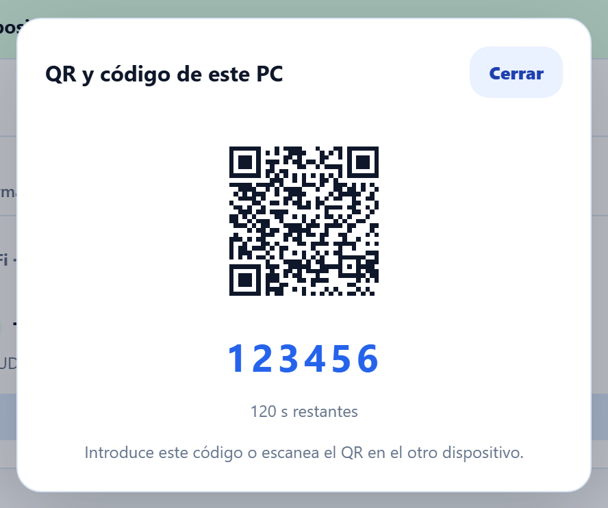
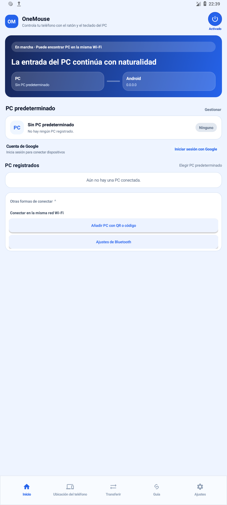
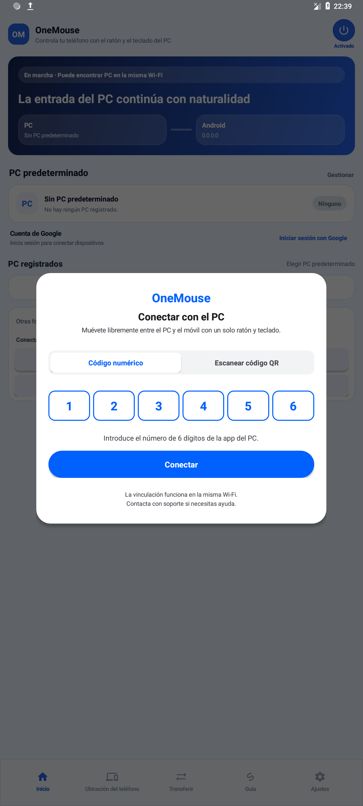
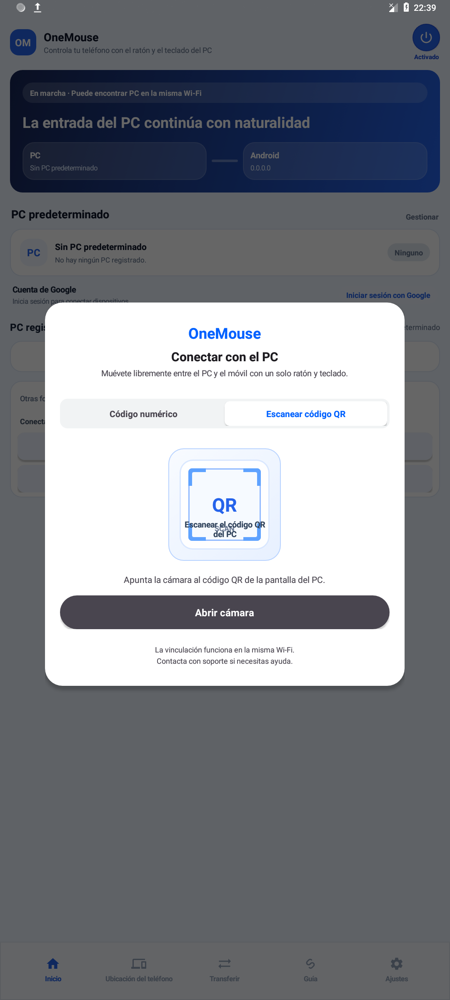
Los códigos y los nombres de dispositivos de las imágenes son ejemplos. Usa el código que muestre actualmente tu propia app de PC. Pulsa una imagen para verla a tamaño completo.
Posición del teléfono
Después de conectar, solo tienes que colocar el teléfono donde está de verdad.
Arrastra cada dispositivo a su posición real en el editor. El cursor cruza por el borde correspondiente.
Ver la pantalla de disposición
Control remoto
Abre pantallas remotas desde Dispositivos.
En Dispositivos, toca el icono de control remoto en la fila de un Android vinculado y se abrirá una ventana aparte con la pantalla del teléfono. La primera vez que la abras, hay que aprobar la captura de pantalla en Android.
Controles de una ventana de Android
- El clic izquierdo, el arrastre y la rueda pasan directamente.
- Clic derecho = Atrás, clic de rueda = Inicio.
- El teclado de tu PC —incluidos el IME y la escritura no latina— va al campo de texto activo del teléfono.
- Si la pantalla se ve en blanco, revisa la ventana emergente de aprobación de captura y apaga y vuelve a encender el control remoto.
Arrastrar con el botón derecho en una ventana remota de Windows
Abre una ventana desde su icono remoto en Dispositivos o con Ctrl+Alt+Shift+1~9 por defecto. Arrastrar con el botón derecho permite usar las extensiones de gestos del navegador del PC de destino, aparte de los gestos de Android.
La fila del dispositivo y el icono
La ventana de control remoto abierta
Android → Windows
Abre y controla la pantalla del PC desde el móvil.
Toca para hacer clic, mueve el cursor y escribe con el teclado del móvil mientras ves la pantalla del PC. Tanto el PC como Android necesitan una versión reciente de la app compatible con esta función.
Abrir la pantalla remota
- Inicia OneMouse en el PC. Vincula los dispositivos en la misma red Wi-Fi o conéctalos con la misma cuenta de Google.
- En la lista de PC registrados de la app de Android, pulsa Pantalla remota en el PC que quieras abrir.
- Revisa la solicitud en el PC y pulsa Permitir. Para usar ese teléfono de nuevo, puedes marcar Permitir siempre este dispositivo.
- Cuando se conecte la pantalla, contrólala con gestos táctiles. Abre el panel de control con el icono de ajustes de la derecha.
Elige el modo de control que prefieras
- Modo táctil: toca una posición para hacer clic y desliza para arrastrar.
- Modo cursor: desliza el dedo para mover el puntero y toca para hacer clic.
- Mantén pulsado para hacer clic derecho. En modo cursor, toca dos veces y mantén la segunda pulsación para arrastrar.
- Pellizca con dos dedos para ampliar o reducir. A tamaño 1×, desliza dos dedos para desplazar el contenido del PC; con la imagen ampliada, ese gesto mueve la vista.
- Usa Teclado para escribir y activa Solo ver si solo quieres mirar.
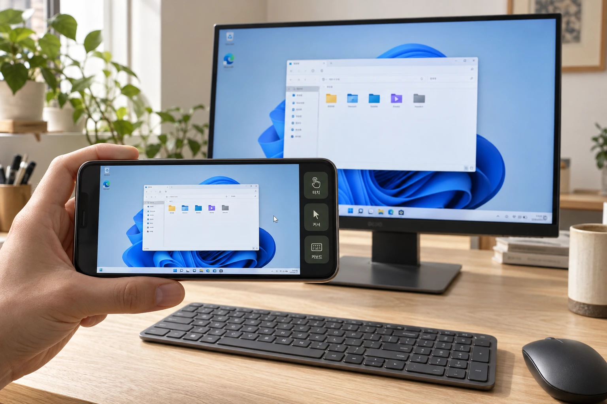
Calidad, fotogramas por segundo y desconexión
El panel permite elegir la calidad y la velocidad máxima de fotogramas. En PC compatibles, la calidad se aplica sin interrumpir la conexión. La resolución y los fotogramas por segundo reales dependen del dispositivo y la red.
Para terminar, pulsa Panel de control → Desconectar. El PC permanece encendido al cerrar la conexión remota. Bluetooth no transmite el vídeo de la pantalla remota.
Gestos del ratón en Android
Mantén el botón derecho y dibuja para navegar.
Cómo activar los gestos, sus siete trazos y las limitaciones.
1. Activar los gestos
En Ajustes → Escritura y portapapeles, activa Gestos del ratón y selecciona las apps (desactivados por defecto). El PC y Android necesitan versiones compatibles con gestos.
Selecciona Todas las apps para usarlos en apps y en la pantalla de inicio. Ver las limitaciones
2. Mantener, dibujar y soltar
Mueve el cursor del PC al teléfono o tableta Android y abre una app seleccionada.
- Mantén pulsado el botón derecho sobre el contenido de la página.
- Dibuja las direcciones en orden; comprueba la acción junto al trazo rojo.
- Suelta para ejecutar. La página no se desplaza mientras dibujas.
La flecha y el indicador vertical muestran la dirección y la intensidad según la longitud del trazo, no la posición en la página ni una distancia exacta.
| Gesto | Acción |
|---|---|
| ← | AtrásDibuja hacia la izquierda para volver a la página o pantalla anterior. |
| → | AdelanteDibuja hacia la derecha para volver a una página tras retroceder. |
| ↑ | Desplazar arribaDibuja arriba y suelta. Un trazo largo desplaza más; uno corto, menos. |
| ↓ | Desplazar abajoDibuja abajo y suelta. Un trazo largo desplaza más; uno corto, menos. |
| ↓ → | Minimizar appVe a Inicio sin cerrar la app. |
| ↑ ↓ | RecargarActualiza la página en un navegador compatible. |
| ↑ → | Apps recientesAbre las apps recientes para elegir otra app. |
Si un gesto no funciona
- Para el control directo de Android, no Windows/Mac ni ventanas de duplicación.
- Adelante restaura el historial. Adelante y Recargar requieren un navegador compatible.
- Empieza sobre el contenido. Un clic derecho breve conserva su función habitual.
- La distancia varía según la app; Inicio y el cajón de apps usan un solo deslizamiento.
Archivos y portapapeles
Envía archivos desde la pantalla de transferencia, la zona de envío rápido o arrastrando de un escritorio a otro.
- Suelta archivos en la pantalla de transferencia o en la pequeña zona de envío rápido para enviarlos al Android, PC con Windows o Mac seleccionado.
- De Windows a Windows o de Windows a Mac por LAN: mantén pulsado un archivo, arrástralo cruzando el límite entre las pantallas y suéltalo en el destino.
- Enviar de Android al PC
- Si no arranca, revisa el estado de la conexión y el dispositivo seleccionado.
Zona de envío rápido
- Pulsa Ctrl+Alt+D para ocultar o mostrar la zona de envío rápido.
- Su posición y su estado se guardan en la aplicación de PC.
La pantalla de la zona de envío rápido
Capturar y enviar
Captura lo que necesitas y envíalo al dispositivo donde lo usarás.
Captura la pantalla de tu PC o la de otro dispositivo que estés controlando. Desde la vista previa puedes copiar la imagen, guardarla o enviarla al portapapeles de un dispositivo conectado.
Cómo capturar y enviar una imagen
- Pulsa el atajo predeterminado Ctrl+Alt+S en Windows. Si estás controlando otro dispositivo, capturarás su pantalla; en caso contrario, la de tu PC.
- Arrastra para seleccionar una zona o pulsa Pantalla completa en la barra de herramientas.
- En la vista previa del PC, pulsa Copiar o Guardar. Para usarla en otro dispositivo, pulsa Enviar y elige el destinatario.
- En el dispositivo receptor, abre una app que admita pegar imágenes y pega la captura.
Si has cambiado el atajo, utiliza la combinación configurada. Durante la selección, pulsa Esc o el botón de cancelar para cerrar sin enviar ninguna imagen.
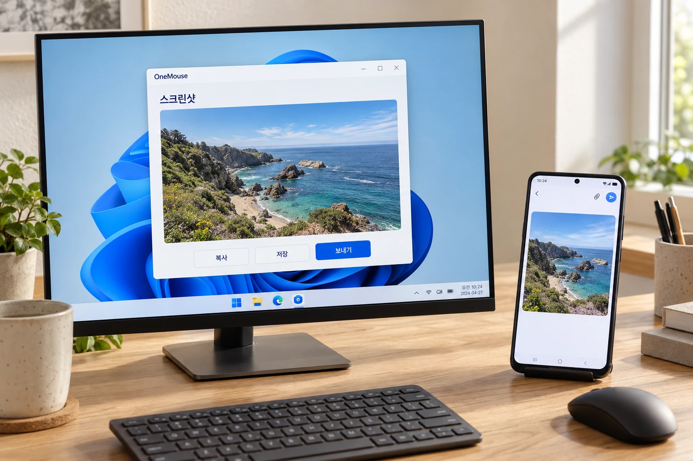
Comprueba la conexión y los permisos
- Enviar imágenes requiere una conexión Wi-Fi o LAN y versiones compatibles en ambos dispositivos. Los dispositivos conectados solo por Bluetooth no pueden recibirlas con esta función.
- Para capturar la pantalla de Android se requiere Android 11 o posterior y el permiso de Accesibilidad; en Mac, el permiso de grabación de pantalla. Es posible que las pantallas protegidas no se puedan capturar.
- En Android, usa una app que admita pegar imágenes. La imagen recibida no se pega automáticamente ni se guarda en la galería.
Del móvil al PC
Envía archivos y el texto seleccionado del teléfono a tu PC.
Para enviar por LAN, elige el PC predeterminado en el inicio de la app móvil y comprueba que está vinculado y conectado. Envía archivos desde la pestaña de transferencia o desde el menú de compartir de Android, y envía texto con OneMouse al PC desde el menú de selección.
Enviar un archivo
- En la pestaña Transferencia de la aplicación móvil, toca Elegir archivos y enviar al PC.
- Selecciona los archivos y se enviarán al PC seleccionado en ese momento.
- Desde una aplicación de fotos o documentos también puedes elegir Compartir y seleccionar OneMouse.
Enviar texto
- Mantén pulsado el texto en Android, selecciónalo y abre Más.
- Toca OneMouse al PC para copiarlo al portapapeles del PC.
- Si no aparece la primera vez, activa OneMouse una vez en la gestión de aplicaciones y vuelve a seleccionarlo.
Encontrar los archivos recibidos en el PC
En Ajustes → General → Transferencia de archivos → Ubicación de archivos recibidos del PC, usa Cambiar carpeta para elegir el destino y Abrir carpeta para verlo. Está disponible tanto en el PC principal como en el secundario.
Ver las pantallas de transferencia de textoCómo activar y usar OneMouse al PC desde el menú de selección de Android.
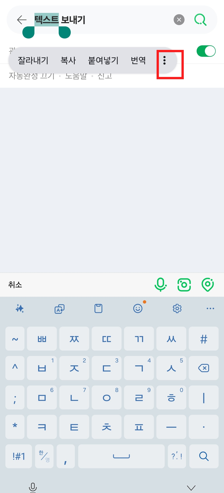
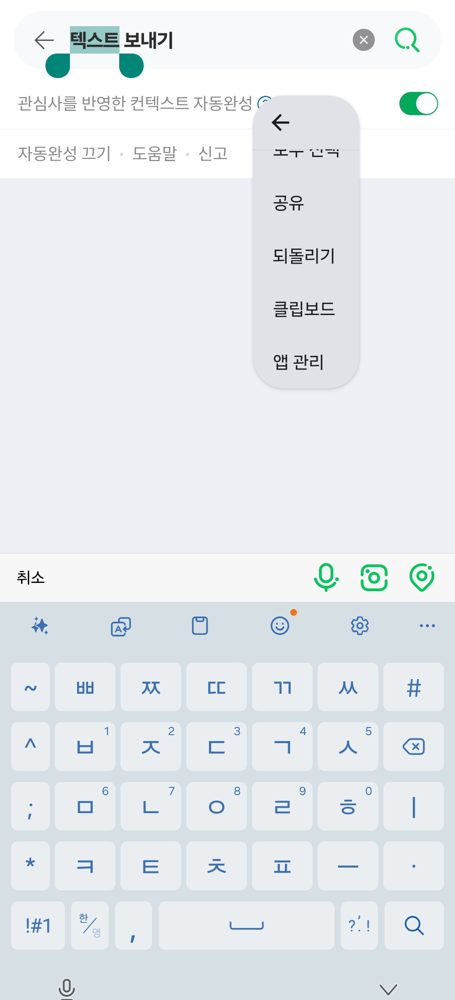
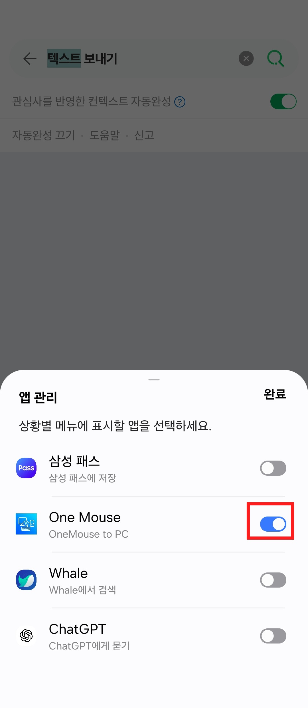
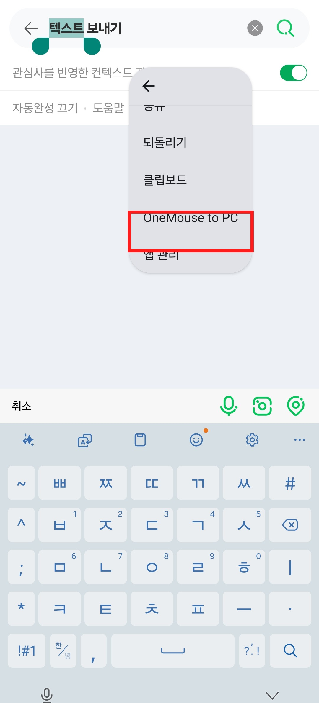
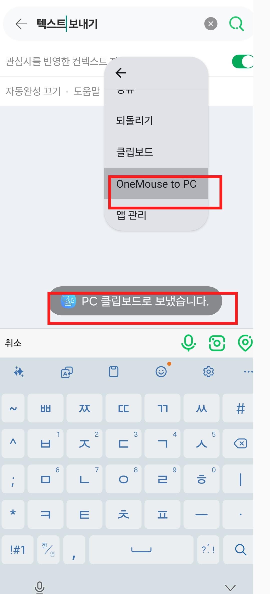
Notificaciones y respuestas
Lee las notificaciones del teléfono y responde cuando se admita.
Recibir notificaciones y ver el historial
En Android, activa Enviar notificaciones al PC, permite el acceso a notificaciones y selecciona las apps que se enviarán. En el PC principal, activa las notificaciones de dispositivos en Ajustes → Notificaciones.
En esa misma pantalla están el historial y su conservación. Más sobre las notificaciones
Responder a una notificación en tiempo real
Responder aparece si el PC y Android admiten respuestas y la notificación original ofrece texto libre. Escribe y pulsa Enviar o Ctrl+Enter para enviar por la app original del teléfono (Enter añade un salto de línea).
Atajos numéricos
Conecta al instante con el número de tu lista de dispositivos.
Ctrl + Alt + 1~9
- De forma predeterminada, los 9 primeros dispositivos LAN de la lista del PC principal reciben Ctrl+Alt+1~9. Consulta los ajustes de atajos para cambiar las teclas.
- Pulsa un número para conectar con ese dispositivo.
- Pulsa el mismo número otra vez para dejar de controlar el dispositivo que controlas actualmente.
Reconexión automática
- Cuando está activada, la aplicación de PC vuelve a conectar sola en cuanto reaparece tu último dispositivo o cuando solo hay uno listo.
Cambiar el orden y los números de los atajos
Con al menos dos dispositivos LAN en el PC principal, elige Dispositivos → Editar orden. Arrastra el asa o usa ↑/↓; se guarda automáticamente y terminas con Listo. Los números de conexión y ventana remota siguen ese mismo orden.
Bluetooth
También puedes conectar por Bluetooth, sin router.
Windows↔Android y Windows↔Windows pueden intercambiar entrada, portapapeles y archivos directamente por Bluetooth.
Va genial cuando
- Estás en una habitación, al aire libre o en un coche sin Wi-Fi compartido
- El Wi-Fi de invitados o un cortafuegos bloquea la detección de dispositivos
- Sobre todo haces tareas ligeras de teclado y portapapeles
Conviene saber
- Usa Wi-Fi o LAN para archivos grandes y pantallas remotas móviles.
- Bluetooth en Mac es beta (actívalo en sus ajustes; desactivado por defecto). LAN es la vía oficial y la única para compartir pantallas o ventanas del Mac.
Orden de conexión
Activa el modo Bluetooth en la pestaña de ajustes de Android
Vincula el teléfono una vez en los ajustes de Bluetooth de Windows
La aplicación de PC se conecta sola → aparece en Dispositivos
Usa la entrada, el portapapeles y los archivos igual que con Wi-Fi
La pantalla de dispositivos de destino por Bluetooth
Otro PC
Conecta otro PC con Windows: dispositivos, conexión y disposición.
Cómo conectar
- Ejecuta OneMouse en ambos PC con Windows. Inicia sesión con la misma cuenta de Google o conecta ambos a la misma red para vincular por LAN.
- Para LAN, abre Gestión de dispositivos → Otras formas de conectar en el PC desde el que controlarás, selecciona el otro PC con Windows, introduce su código de 6 dígitos y pulsa Vincular. El código se muestra en el otro PC, en Gestión de dispositivos → Otras formas de conectar → QR y código de este PC. La vinculación LAN no requiere iniciar sesión.
- Comprueba el estado de conexión del PC registrado y activa Conectar si hace falta. Colócalo en el editor de disposición donde está situado realmente.
- Mueve el ratón en esa dirección para controlar el otro PC e intercambia archivos arrastrándolos a través del límite.
Pantallas de vinculación y disposición
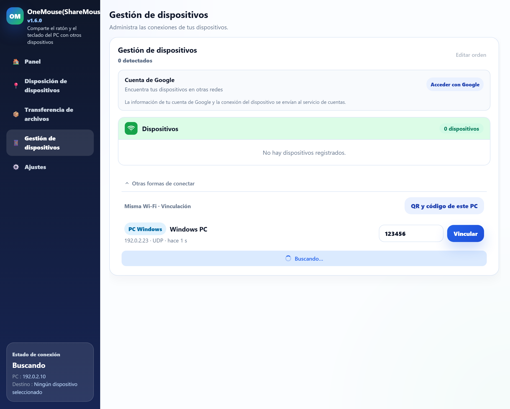
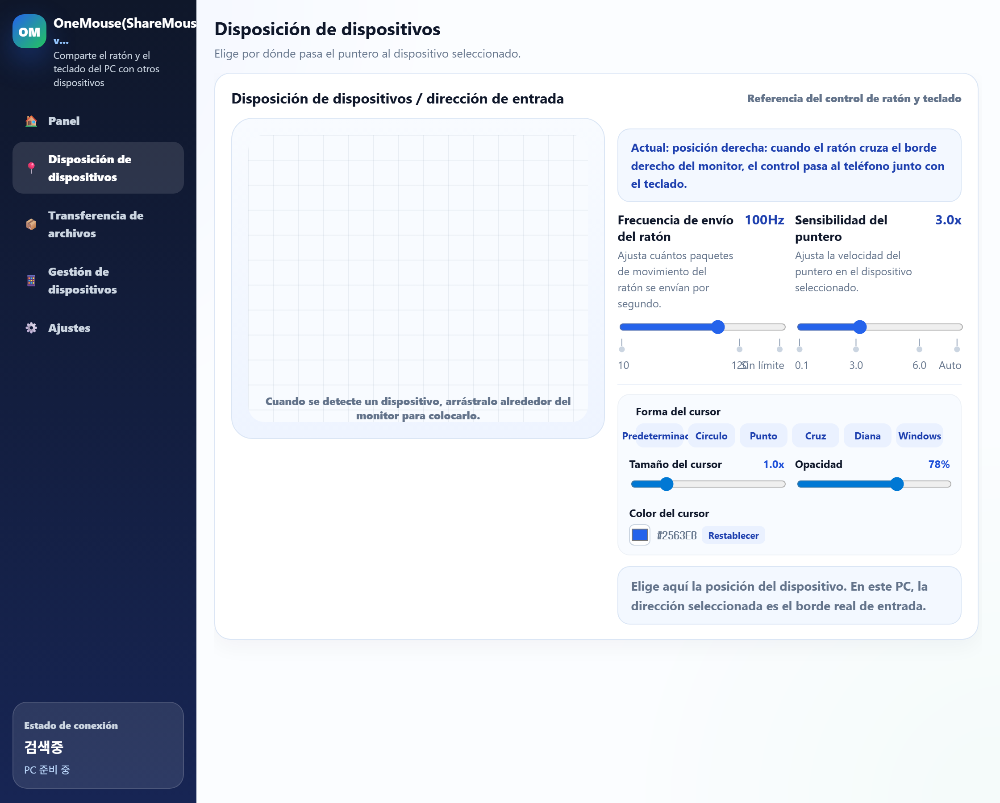
Mac · Compatibilidad pública
Conecta desde Windows un Mac con Apple Silicon y macOS 13 o posterior.
Instala el DMG público en el Mac y luego inicia y gestiona la conexión LAN desde OneMouse en Windows. Sigue estos cinco pasos.
Pon Windows y Mac en la misma red local
Ejecuta OneMouse en Windows 10/11 y en el Mac, con los dos equipos conectados a la misma red Wi-Fi o LAN. Las conexiones se inician y se gestionan desde Windows.
Concede los permisos del Mac
Permite Accesibilidad para que el Mac pueda ejecutar la entrada de ratón y teclado recibida. En macOS 15 o posterior, permite también Red local para la detección; macOS 13/14 puede no mostrar este elemento.
Selecciona el Mac en Windows
Abre Dispositivos en la aplicación de Windows y selecciona el Mac detectado.
Introduce el código de 6 dígitos del Mac
Introduce en Windows el código de vinculación de 6 dígitos que muestra el Mac y luego confirma la vinculación.
Coloca el Mac y cruza
Coloca el Mac junto a la pantalla de Windows en el editor de disposición. Mueve el cursor a través de ese borde para controlarlo e intercambia archivos y portapapeles en ambos sentidos.
Pantalla compartida por LAN (opcional)
El permiso de grabación de pantalla y audio del sistema solo hace falta cuando eliges ver o controlar la pantalla del Mac desde Windows. OneMouse no captura el audio del sistema.
Bluetooth en Mac
El Bluetooth en Mac está disponible como beta: actívalo en los ajustes de la aplicación de Mac (desactivado por defecto). La LAN sigue siendo la vía oficialmente compatible, y compartir la pantalla o una ventana solo funciona por LAN.
Permisos
Cada plataforma pide solo los permisos que necesitan sus funciones.
La entrada en Android requiere el servicio de accesibilidad; en Mac, Accesibilidad. Ver la pantalla remota de Android o Mac también requiere aprobar la captura o grabación de pantalla.
Atajos de teclado y cuándo se aplican.
Estos atajos del PC son los predeterminados. En Ajustes del PC → Atajos puedes cambiar cada combinación, desactivar acciones individuales o desactivar todos los atajos. Si cambiaste una combinación, usa la que guardaste.
Atajos predeterminados de la app de Windows
| Atajo predeterminado | Acción y condiciones |
|---|---|
| Ctrl+Alt+1~9 | PC principal: conecta el control de entrada al dispositivo correspondiente de la lista. Pulsa el mismo número otra vez para dejar de controlar el dispositivo actual. |
| Ctrl+Alt+Shift+1~9 | PC principal: abre la ventana remota correspondiente o trae al frente una ventana existente. Pulsarlo otra vez no cierra la ventana. Los atajos de conexión y ventana remota comparten los números de los dispositivos LAN; los dispositivos Bluetooth quedan fuera de esa numeración. |
| Ctrl+Alt+D | Muestra / oculta la zona de envío rápido. |
| Ctrl+Alt+S | Selecciona un área de la pantalla del PC Windows, Mac o Android que controlas y recíbela en el PC principal. Si no controlas otro dispositivo, captura este PC. Ambas apps deben admitir la función y el destino necesita permiso de captura. |
| Ctrl+Alt+V | PC principal: copia el código de verificación mientras su notificación del teléfono aparece en el PC. Activa primero el envío de notificaciones del teléfono. |
| Ctrl+V | Recibe y pega archivos compartidos copiados en otro PC. Si no hay archivos compartidos pendientes, el pegado normal sigue disponible. |
| Ctrl+Alt+Backspace | PC principal: devuelve inmediatamente el cursor al centro de tu monitor mientras controlas otro dispositivo. |
Al controlar Android directamente
Estas combinaciones se envían a Android y son distintas de los ajustes de atajos de la app del PC. La edición de texto depende de la app y del campo de texto de destino.
| Atajo predeterminado | Acción y condiciones |
|---|---|
| PrintScreen | Android 11 o posterior: captura la pantalla del teléfono durante el control directo y envíala al PC. Requiere permiso de Accesibilidad. |
| Alt+Shift+↑ / Alt+Shift+↓ | Sube / baja el brillo de Android. Requiere permiso para modificar los ajustes del sistema. |
| Alt+↑ / Alt+↓ | Sube / baja el volumen multimedia de Android. |
| Alt+Tab / Alt+Shift+Tab | Cambia entre apps recientes / recorre la lista en sentido inverso. Suelta Alt para abrir la app seleccionada. |
| Ctrl+A / Ctrl+C / Ctrl+X / Ctrl+V | Selecciona todo / copia / corta / pega en un campo de texto compatible. |
| Ctrl+Insert / Shift+Insert / Shift+Delete | Copia / pega / corta en un campo de texto compatible. |
| Ctrl+Z | Deshace una acción en apps y campos de texto compatibles. |
Al usar un teclado de Windows para controlar un Mac
La asignación predeterminada de atajos de Windows envía Ctrl como Command y Alt como Option. Puedes elegir los modificadores nativos de Mac en los ajustes de teclado de la app de Mac. Esto no significa sustituir Ctrl por Command en los atajos de la app de Windows de arriba.